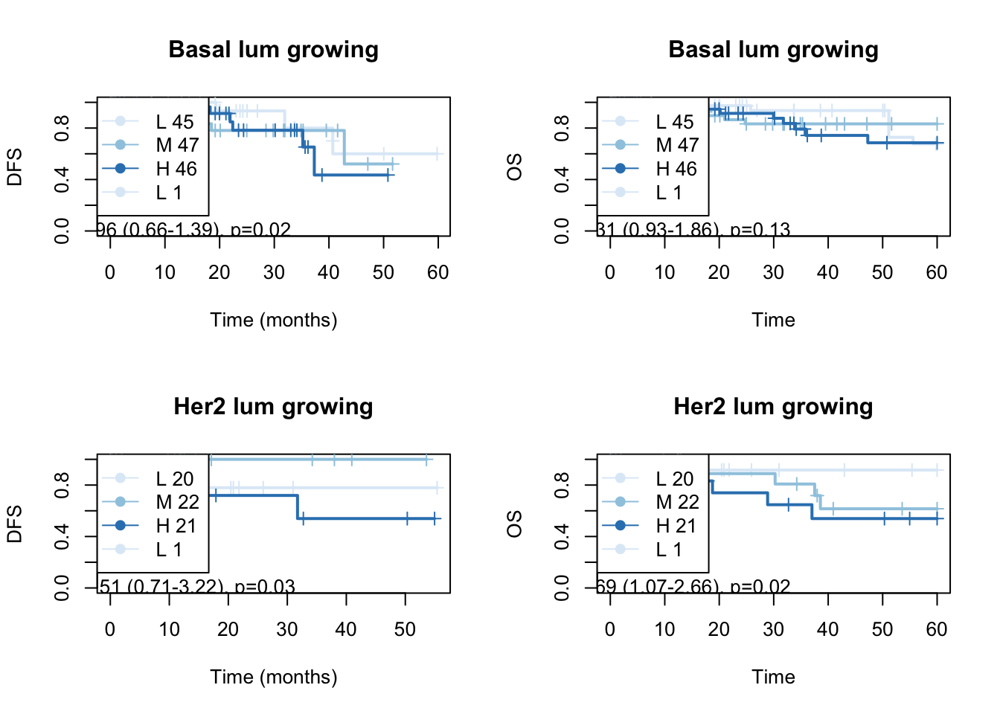

Chapter 14 Epcam+ Inflammatory vs non-inflammatory samples
14.1 Identification of inflammatory samples
Here, look at individual enrichment scores (ssGSEA). We notice in the Epithelial samples there are 5 samples which appear to be hyperinflammatory: They have higher enrichment for TNFA, interferon signalling for example.
d1=DNismr3$Hallmark[, c("stable_vs_growing NES", "stable_vs_growing padj")]
e1=Epismr3$Hallmark[, c("stable_vs_growing NES", "stable_vs_growing padj")]
c1=CDismr3$Hallmark[, c("stable_vs_growing NES", "stable_vs_growing padj")]
#
ds=which(d1[ ,2]<0.05)
es=which(e1[ ,2]<0.05)
cs=which(c1[ ,2]<0.05)
AUnique=c(rownames(d1)[ds], rownames(e1)[es], rownames(c1)[cs])
xalist=unique(AUnique)
sList=PathInH[match((rownames(e1)[es]), names(PathInH))]
tpmTemp=allTPMFinal[ , match(vstEp$SampleID, colnames(allTPMFinal))]
colnames(tpmTemp)=infoTableFinal$TumorIDnew[match(colnames(tpmTemp), rownames(infoTableFinal))]
rownames(tpmTemp)=rNames2
gsva1=gsva(tpmTemp, sList, method="ssgsea", ssgsea.norm=T)
nx2=sapply(1:nrow(gsva1), function(x) sd(gsva1[x, ]))
a1=which(nx2>0.03)
sList=PathInH[match((rownames(d1)[ds]), names(PathInH))]
tpmTemp=allTPMFinal[ , match(vstDN$SampleID, colnames(allTPMFinal))]
colnames(tpmTemp)=infoTableFinal$TumorIDnew[match(colnames(tpmTemp), rownames(infoTableFinal))]
rownames(tpmTemp)=rNames2
gsva2=gsva(tpmTemp, sList, method="ssgsea", ssgsea.norm=T)
nx2=sapply(1:nrow(gsva2), function(x) sd(gsva2[x, ]))
a2=which(nx2>0.03)
sList=PathInH[match((rownames(c1)[cs]), names(PathInH))]
tpmTemp=allTPMFinal[ , match(vstCD$SampleID, colnames(allTPMFinal))]
rownames(tpmTemp)=rNames2
gsva3=gsva(tpmTemp, sList, method="ssgsea", ssgsea.norm=T)
nx2=sapply(1:nrow(gsva3), function(x) sd(gsva3[x, ]))
a3=which(nx2>0.03)
#pdf("~/Desktop/5B-ssgsea-scores-hallmark-pathways.pdf", height=5, width=5)
HRstat2=Cdata$HR_status[match(vstEp$TumorID, Cdata$TumorID)]
HRstat2[which(HRstat2=="Basal")]=NACheck which pathways are enriched in which specific samples:
par(oma=c(1, 1, 1, 5))
# heatmap.2(gsva1[a1, ], col=RdBu[11:1], scale="none", trace="none", ColSideColors = ColSizeb[vstEp$Growth],
# main="Ep")
heatmap.2(gsva1[a1, ], col=RdBu[11:1], scale="none", trace="none", ColSideColors = ColMerge[ vstEp$Treatment,1],
main="Ep")
Figure 14.1: ssGSEA specific pathways
Below are the pathways specific to cd45 and dn
heatmap.2(gsva2[a2, ], col=RdBu[11:1], scale="none", trace="none", ColSideColors = ColSizeb[vstDN$Growth],
main="DN")
heatmap.2(gsva3[a3, ], col=RdBu[11:1], scale="none", trace="none", ColSideColors = ColSizeb[vstCD$Growth],
main="CD")
14.2 DEG: inflammatory vs non-inflammatory
What genes are different between inflammatory and non-inflammatory?
Inflamm=c("11N_D_Ep", "6R_B_Ep", "8L_D_Ep", "10L_D_Ep", "3N_B_Ep")
Epdds$Inflammation="no"
Epdds$Inflammation[which(colnames(Epdds)%in%Inflamm)]="yes"
Epdds$Inflammation=factor(Epdds$Inflammation)
vstEpInf=Epdds
design(vstEpInf)=~Inflammation
vstEpInf=DESeq(vstEpInf)
vstEpInfRes=results(vstEpInf)
sigGenes=rownames(vstEpInfRes)[which(vstEpInfRes$padj<0.05 & abs(vstEpInfRes$log2FoldChange)>2.5 &
vstEpInfRes$baseMean>200)]
colnames(vstEp)=infoTableFinal$TumorIDnew[match(colnames(vstEp), rownames(infoTableFinal))]
heatmap.2(assay(vstEp)[sigGenes, ], col=RdBu[11:1], trace="none", scale = "row", ColSideColors = ColSizeb[vstEpInf$Growth], hclustfun = hclust.ave)
Figure 14.2: Differential gene exp inflammatory vs non-inflammatory
There are 27 genes which differentiates these two, which includes Csf3, Ccl22, Ccl3, Pltp, Lck, Rac2, Mmp12, Rsad2, Bcl2a1, Cxcl1, Lyz2, C1s, Ccl2, Nr4a2, Plaur, Ets1, Plau, Angptl4, Il1b, Cxcl2, Hbegf, Cd74, Ccl17, Thbs1, RT1-Da, Oasl, Tyrobp.
We can also assess whether there is an association between immune infiltration. We can compare whether the non-inflammatory have differences in T-cell infiltration, mixing indices based on imaging data. Below ‘no’ samples are non-inflammatory and ‘yes’ samples are hyper-inflammatory.
## boxplots for
nTab=data.frame(inf=vstEpInf$Inflammation, MH=vstEpInf$MHEpCAM, cd8=vstEpInf$CD8Frac,
knn=vstEpInf$knnEpCAM)
nTabmelt=melt(nTab, measure.vars = c("cd8", "knn", "MH"))
ggplot(data=nTabmelt, aes(x=inf, y=value))+geom_boxplot()+geom_point()+theme_bw()+facet_wrap(~variable, scale="free")
Figure 14.3: association signature with WSI
write.csv(nTabmelt, file="nature-tables/Ext5d.csv")
Cdata$Inflammation=NA
Cdata$Inflammation=vstEpInf$Inflammation2[match(Cdata$NewID, colnames(vstEp))]
nTab
## inf MH cd8 knn
## 1 yes 0.61918860 0.06810877 34.33110
## 2 no 0.43765215 0.02027148 44.92703
## 3 no 0.23771466 0.15217774 69.10296
## 4 yes 0.67778543 0.38006717 26.89773
## 5 no 0.26460731 0.02244524 73.82461
## 6 no 0.02617825 0.05041860 153.33513
## 7 no 0.67710428 0.02236926 12.74758
## 8 no 0.26412928 0.05412980 45.49485
## 9 no NA NA NA
## 10 no NA NA NA
## 11 no NA NA NA
## 12 no 0.05741998 0.04769261 71.64542
## 13 no 0.76751419 0.11152672 15.06388
## 14 no 0.34918782 0.03010410 47.77260
## 15 yes 0.63717941 0.27682992 32.31159
## 16 no 0.38112224 0.02321393 32.11938
## 17 yes 0.50296493 0.15548043 76.37955
## 18 no NA NA NA
## 19 yes 0.64888492 0.05623363 16.36623
## 20 no 0.36761266 0.02876680 50.00101Statistics are below:
print('assoc with cd8')
## [1] "assoc with cd8"
#t.test(nTab$cd8~nTab$inf)
#table(nTab$cd8, nTab$inf)
print('assoc with MH index')
## [1] "assoc with MH index"
#t.test(nTab$MH~nTab$inf)
#table(nTab$MH,nTab$inf)
print('assoc with knn')
## [1] "assoc with knn"
#t.test(nTab$knn~nTab$inf)
#table(nTab$knn~nTab$inf)
nTab
## inf MH cd8 knn
## 1 yes 0.61918860 0.06810877 34.33110
## 2 no 0.43765215 0.02027148 44.92703
## 3 no 0.23771466 0.15217774 69.10296
## 4 yes 0.67778543 0.38006717 26.89773
## 5 no 0.26460731 0.02244524 73.82461
## 6 no 0.02617825 0.05041860 153.33513
## 7 no 0.67710428 0.02236926 12.74758
## 8 no 0.26412928 0.05412980 45.49485
## 9 no NA NA NA
## 10 no NA NA NA
## 11 no NA NA NA
## 12 no 0.05741998 0.04769261 71.64542
## 13 no 0.76751419 0.11152672 15.06388
## 14 no 0.34918782 0.03010410 47.77260
## 15 yes 0.63717941 0.27682992 32.31159
## 16 no 0.38112224 0.02321393 32.11938
## 17 yes 0.50296493 0.15548043 76.37955
## 18 no NA NA NA
## 19 yes 0.64888492 0.05623363 16.36623
## 20 no 0.36761266 0.02876680 50.0010114.3 Finding 3 signatures for 3 branches
Below we can perform a 1 vs all analysis i.e. compare
- growing vs the rest
- inflammatory vs the rest
- stable vs the rest
#vstEpInf$Inflammation2=vstEpInf$Inflammation
vstEpInf$Inflammation2=factor(ifelse(vstEpInf$Inflammation=="yes", "inf", ifelse(vstEpInf$Growth=="growing", "grow", "stab")))
design(vstEpInf)=~Inflammation2
vstEpInf=DESeq(vstEpInf)
vstEpInfRes1=results(vstEpInf, contrast = c("Inflammation2", "stab", "inf"))
res1genes=rownames(vstEpInfRes1)[which(vstEpInfRes1$padj<0.05 & abs(vstEpInfRes1$log2FoldChange)>1.5 &
vstEpInfRes1$baseMean>100)]
vstEpInfRes2=results(vstEpInf, contrast = c("Inflammation2", "stab", "grow"))
res2genes=rownames(vstEpInfRes2)[which(vstEpInfRes2$padj<0.05 & abs(vstEpInfRes2$log2FoldChange)>1.5 &
vstEpInfRes2$baseMean>100)]
vstEpInfRes3=results(vstEpInf, contrast = c("Inflammation2", "grow", "inf"))
res3genes=rownames(vstEpInfRes3)[which(vstEpInfRes3$padj<0.05 & abs(vstEpInfRes3$log2FoldChange)>1.5 &
vstEpInfRes3$baseMean>100)]
aUnique=c(res1genes, res2genes, res3genes)
AX1=setdiff(res2genes, res1genes)
ax2=setdiff(res3genes, res1genes)
heatmap.2(assay(vstEp)[AX1, ], col=RdBu[11:1], trace="none", scale = "row", ColSideColors = ColSizec[vstEpInf$Inflammation2], hclustfun = hclust.ave)
write.csv(assay(vstEp)[AX1, ], file="nature-tables/Ext5c.csv")
nTab=data.frame(inf=vstEpInf$Inflammation2, MH=vstEpInf$MHEpCAM, cd8=vstEpInf$CD8Frac,
knn=vstEpInf$knnEpCAM)
nTabmelt=melt(nTab, measure.vars = c("cd8", "knn", "MH"))
ggplot(data=nTabmelt, aes(x=inf, y=value))+geom_boxplot()+geom_point()+theme_bw()+facet_wrap(~variable, scale="free")
We see that the growing vs stable samples are very similary overall, however, DEGs between growing and stable are also expressed in the inflammatory branch.
We can use these gene signatures to identify each branch: Below, we see the separation between the 3 groups using these genes. (note that the stable branch has no identifiable upregulated genes and is defined by the negative score of the downregulated genes:). We use ssGSEA to get a score for each sample
vstEpInf$Inflammation3=vstEpInf$Inflammation2
vstEpInf$Inflammation3[which(vstEpInf$Inflammation3=="stab")]="inf"
vstEpInf$Inflammation3=factor(vstEpInf$Inflammation3)
design(vstEpInf)=~(Inflammation3)
vstEpInfb=DESeq(vstEpInf)
vstEpInfRes1b=results(vstEpInfb)
res1genesGrow=rownames(vstEpInfRes1b)[which(vstEpInfRes1b$padj<0.05 & (vstEpInfRes1b$log2FoldChange)<(-1.5) &
vstEpInfRes1b$baseMean>100)]
vstEpInf$Inflammation3=vstEpInf$Inflammation2
vstEpInf$Inflammation3[which(vstEpInf$Inflammation2=="grow")]="inf"
vstEpInf$Inflammation3=factor(vstEpInf$Inflammation3)
design(vstEpInf)=~(Inflammation3)
vstEpInfb=DESeq(vstEpInf)
vstEpInfRes1b=results(vstEpInfb)
res1genesStab=rownames(vstEpInfRes1b)[which(vstEpInfRes1b$padj<0.05 & (vstEpInfRes1b$log2FoldChange)<(-1.5) &
vstEpInfRes1b$baseMean>100)]
vstEpInf$Inflammation3=vstEpInf$Inflammation2
vstEpInf$Inflammation3[which(vstEpInf$Inflammation2=="stab")]="grow"
vstEpInf$Inflammation3=factor(vstEpInf$Inflammation3)
design(vstEpInf)=~(Inflammation3)
vstEpInfb=DESeq(vstEpInf)
vstEpInfRes1b=results(vstEpInfb)
res1genesInf=rownames(vstEpInfRes1b)[which(vstEpInfRes1b$padj<0.05 & (vstEpInfRes1b$log2FoldChange)>(1.5) &
vstEpInfRes1b$baseMean>100)]
## perform ssGSEA on these samples and see where they fit:
RatssGSEA=gsva(assay(vsdLimmaEp),
list(grow=res1genesGrow, inh=res1genesInf, nonstab=res1genesStab), method="ssgsea", ssgsea.norm=T)
par(mfrow=c(1,2))
plot(RatssGSEA[1, ], RatssGSEA[2, ], col=factor(vstEpInf$Inflammation2), xlab="grow score", ylab="inh score")
plot(RatssGSEA[1, ], -RatssGSEA[3, ], col=factor(vstEpInf$Inflammation2), xlab="grow score", ylab="-stab score")
We can also overlay these signatures from ssGSEA to see how well it can predict each group:
# plot histograms for the 3 samples:
par(mfrow=c(3,3))
for (i in 1:3){
for (j in c("inf", "grow", "stab")){
plot(density(RatssGSEA[i, which(vstEpInf$Inflammation2==j)]), main=paste(j, rownames(RatssGSEA)[i]),
xlim=c(-0.6, 0.8))
}
}
GSEA for the above 3 groups?
l1=SymHum2Rat$HGNC.symbol[match(rownames(vstEpInfRes1), SymHum2Rat$RGD.symbol)]
l2=Rat2Hum$HGNC.symbol[match(rownames(vstEpInfRes1), Rat2Hum$RGD.symbol)]
l3=Mouse2Hum$HGNC.symbol[match(rownames(vstEpInfRes1), Mouse2Hum$MGI.symbol)]
EpGenesConv=ifelse(is.na(l1)==F, l1, ifelse(is.na(l2)==F, l2, ifelse(is.na(l3)==F, l3, rownames(vstEpInfRes1))))
## run 1
hits=EpGenesConv[match(res1genes, rownames(vstEpInfRes1))]
fcTab=vstEpInfRes1$log2FoldChange
names(fcTab)=EpGenesConv
gscaepInf1=GSCA(listOfGeneSetCollections=ListGSC,geneList=fcTab, hits = hits)
gscaepInf1 <- preprocess(gscaepInf1, species="Hs", initialIDs="SYMBOL",
keepMultipleMappings=TRUE, duplicateRemoverMethod="max",
orderAbsValue=FALSE)
gscaepInf1 <- analyze(gscaepInf1,
para=list(pValueCutoff=0.05, pAdjustMethod="BH",
nPermutations=100, minGeneSetSize=5,
exponent=1),
doGSOA = F)
## run2
hits=EpGenesConv[match(res2genes, rownames(vstEpInfRes2))]
fcTab=vstEpInfRes2$log2FoldChange
names(fcTab)=EpGenesConv
gscaepInf2=GSCA(listOfGeneSetCollections=ListGSC,geneList=fcTab, hits = hits)
gscaepInf2 <- preprocess(gscaepInf2, species="Hs", initialIDs="SYMBOL",
keepMultipleMappings=TRUE, duplicateRemoverMethod="max",
orderAbsValue=FALSE)
gscaepInf2 <- analyze(gscaepInf2,
para=list(pValueCutoff=0.05, pAdjustMethod="BH",
nPermutations=100, minGeneSetSize=5,
exponent=1),
doGSOA = F)
## run3
hits=EpGenesConv[match(res3genes, rownames(vstEpInfRes3))]
fcTab=vstEpInfRes3$log2FoldChange
names(fcTab)=EpGenesConv
gscaepInf3=GSCA(listOfGeneSetCollections=ListGSC,geneList=fcTab, hits = hits)
gscaepInf3 <- preprocess(gscaepInf3, species="Hs", initialIDs="SYMBOL",
keepMultipleMappings=TRUE, duplicateRemoverMethod="max",
orderAbsValue=FALSE)
gscaepInf3 <- analyze(gscaepInf3,
para=list(pValueCutoff=0.05, pAdjustMethod="BH",
nPermutations=100, minGeneSetSize=5,
exponent=1),
doGSOA = F)
GSEA1=gscaepInf1@result$GSEA.results$ProcessNetworks
GSEA2=gscaepInf2@result$GSEA.results$ProcessNetworks
GSEA3=gscaepInf3@result$GSEA.results$ProcessNetworks
lx1=unique(c(rownames(GSEA1)[which(GSEA1[ ,3]<0.05)],
rownames(GSEA2)[which(GSEA2[ ,3]<0.05)],
rownames(GSEA3)[which(GSEA3[ ,3]<0.05)]))
Fx=cbind(GSEA1[lx1, 1], GSEA3[lx1, 1], GSEA2[lx1, 1])
Fx2=cbind(GSEA1[lx1, 3], GSEA3[lx1, 3], GSEA2[lx1, 3])
Fx[which(Fx2>0.05, arr.ind=T)]=0
rownames(Fx)=lx1
colnames(Fx)=c("s/i", "g/i", "s/g")
ltest=which(rowSums(sign(abs(Fx)))>1)
ltest2=which(abs(Fx[,3])>0)
par(oma=c(1,1,1,5))
heatmap.2(Fx[unique(c(ltest,ltest2)), ], col=RdBu[11:1], trace="none", scale = "none", hclustfun = hclust.ave)
14.4 Analyse the non-inflammatory samples
We remove all the inflammtory samples and compare differences between stable and growing here. Below is the volcano plot for the
#Remove inflammatory samples
#Also remove samples which are basal-like
Inflamm=c("11N_D_Ep", "6R_B_Ep", "8L_D_Ep", "10L_D_Ep", "3N_B_Ep") #,"2N__Ep", "15N_C_Ep", "7N_A_Ep", "8R_CU_Ep", "12L_D_Ep", "14N_D_Ep")
EpddsInflam=EpddsGrowth
EpddsInflam=EpddsInflam[, -match(Inflamm, colnames(EpddsInflam))]
EpddsInflam=DESeq(EpddsInflam)
ResA=results(EpddsInflam, contrast = c("Growth", "stable", "growing"))
ResAb=ResA[which(ResA$padj<0.05 & abs(ResA$log2FoldChange)>1.5), ]
#pdf("~/Desktop/5C-heatmap-inflamm-vs-non-inflamm-lowexpressing-included.pdf", width=8, height=12)
plot(ResA$log2FoldChange, -log10(ResA$padj), pch=20, col="black",
main="growing (-ve) vs stable (+ve)")
text(ResAb$log2FoldChange, -log10(ResAb$padj), rownames(ResAb), col="red")
Figure 14.4: ep non-inflammatory comparison
Followed by the heatmap for this analysis
vst2=vst(EpddsInflam)
heatmap.2(assay(vst2)[match(rownames(ResAb), rownames(vst2)), ], col=RdBu[11:1],
ColSideColors = ColSizeb[vst2$Growth], trace="none", scale="row")
Figure 14.5: ep non-inflammatory comparison heatmap
# heatmap.2(assay(vstEp)[match(rownames(ResAb), rownames(vstEp)), ], col=RdBu[11:1],
# ColSideColors = ColSizeb[vstEp$Growth], trace="none", scale="row")
#dev.off()
#write.csv(ResAb, file="~/Desktop/5C-growing-stable-in-non-inflammatory-Ep-lowexpressing-included.csv")14.4.1 GSEA
Quickly run GSEA for these samples:
EpGenes=rownames(ResA)
l1=SymHum2Rat$HGNC.symbol[match(EpGenes, SymHum2Rat$RGD.symbol)]
l2=Rat2Hum$HGNC.symbol[match(EpGenes, Rat2Hum$RGD.symbol)]
l3=Mouse2Hum$HGNC.symbol[match(EpGenes, Mouse2Hum$MGI.symbol)]
EpGenesConv=ifelse(is.na(l1)==F, l1, ifelse(is.na(l2)==F, l2, ifelse(is.na(l3)==F, l3, EpGenes)))
hits=EpGenesConv[match(rownames(ResAb), EpGenes)]
fcTab=ResA$log2FoldChange
names(fcTab)=EpGenesConv
gscaepInf=GSCA(listOfGeneSetCollections=ListGSC,geneList=fcTab, hits = hits)
gscaepInf <- preprocess(gscaepInf, species="Hs", initialIDs="SYMBOL",
keepMultipleMappings=TRUE, duplicateRemoverMethod="max",
orderAbsValue=FALSE)
## -Preprocessing for input gene list and hit list ...
## --Removing genes without values in geneList ...
## --Removing duplicated genes ...
## --Converting annotations ...
## -- 527 genes (out of 12341) could not be mapped to any identifier, and were removed from the data.
## -- 30 genes (out of 265) could not be mapped to any identifier, and were removed from the data.
## --Ordering Gene List decreasingly ...
## -Preprocessing complete!
gscaepInf <- analyze(gscaepInf,
para=list(pValueCutoff=0.05, pAdjustMethod="BH",
nPermutations=100, minGeneSetSize=5,
exponent=1),
doGSOA = F)
## --146 gene sets don't have >= 5 overlapped genes with universe in gene set collection named c2List!
## --848 gene sets don't have >= 5 overlapped genes with universe in gene set collection named c5BP!
## --269 gene sets don't have >= 5 overlapped genes with universe in gene set collection named c5MF!
## --110 gene sets don't have >= 5 overlapped genes with universe in gene set collection named c5CC!
## --377 gene sets don't have >= 5 overlapped genes with universe in gene set collection named MetPathway!
## -Performing gene set enrichment analysis using HTSanalyzeR2...
## --Calculating the permutations ...
## -Gene set enrichment analysis using HTSanalyzeR2 complete
## ==============================================
A1=summarize(gscaepInf)
##
## -No of genes in Gene set collections:
## input above min size
## c2List 2199 2053
## c5BP 7530 6682
## c5MF 1663 1394
## c5CC 999 889
## ProcessNetworks 158 158
## MetPathway 1480 1103
## Hallmark 50 50
##
##
## -No of genes in Gene List:
## input valid duplicate removed converted to entrez
## Gene List 12449 12449 12341 11814
##
##
## -No of hits:
## input preprocessed
## Hits 265 235
##
##
## -Parameters for analysis:
## minGeneSetSize pValueCutoff pAdjustMethod
## HyperGeo Test 5 0.05 BH
##
## minGeneSetSize pValueCutoff pAdjustMethod nPermutations exponent
## GSEA 5 0.05 BH 100 1
##
##
## -Significant gene sets (adjusted p-value< 0.05 ):
## c2List c5BP c5MF c5CC ProcessNetworks MetPathway Hallmark
## HyperGeo NA NA NA NA NA NA NA
## GSEA 188 641 116 130 17 16 19
## Both NA NA NA NA NA NA NA
PNresultsef=gscaepInf@result$GSEA.results$ProcessNetworks
TermsA=sapply(strsplit(rownames(gscaepInf@result$GSEA.results$ProcessNetworks), "_"), function(x) x[2])
TermsA[which(is.na(TermsA))]=substr(rownames(gscaepInf@result$GSEA.results$ProcessNetworks)[which(is.na(TermsA))], 2, 50)
## check whether this runs:
gscaepInf@result$GSEA.results$ProcessNetworks$Gene.Set.Term=TermsA
viewEnrichMap(gscaepInf, gscs=c("ProcessNetworks"),
allSig = TRUE, gsNameType="term" )Figure 14.6: 5g: non inflammatory branch
#plotGSEA(gscaepInf, gscs=c("ProcessNetworks"), filepath="figure-outputs/", output="pdf")
save(gscaepInf2, file="figure-outputs/5g.Rdata") # save this file to change the color scheme
write.csv(gscaepInf@result$GSEA.results$ProcessNetworks, file="nature-tables/Ext5g_perhaps.csv")We’ve noticed that some of the differentially expressed genes above are splicing related or epigenetic related. Could there be an association with transcriptional diversity? Below we calculate the transcriptional diversity based on rsem values
local.rnaseq.shannon <- function(exp.mat, pseudoNum = 0){
# calculate shannon index from transcriptome matrix
apply(exp.mat, 2, function(x){
x<-x+pseudoNum
prop<-x/sum(x)
#prop<-prop[prop>0]
shidx = -sum(prop*log(prop), na.rm=T)/log(length(prop))
shidx
})
}
Output1=local.rnaseq.shannon(allrsemFinal)
Output2=Output1[which(infoTableFinal$Fraction=="Ep" & infoTableFinal$Cohort=="Progression")]
tab2=data.frame(inf=vstEpInf$Inflammation2, het=Output2[-3])
ggplot(tab2, aes(x=inf, y=het))+geom_boxplot()+geom_point()+ggtitle("transcriptional heterogeneity: rsem")
Figure 14.7: Transcriptional heterogeneity
wilcox.test(tab2$het[tab2$inf!="inf"]~tab2$inf[tab2$inf!="inf"])
##
## Wilcoxon rank sum exact test
##
## data: tab2$het[tab2$inf != "inf"] by tab2$inf[tab2$inf != "inf"]
## W = 9, p-value = 0.05528
## alternative hypothesis: true location shift is not equal to 0
write.csv(tab2, file="nature-tables/Ext5j_transcriptional_heterigeneity.csv")14.5 Luminal-only non-inflammtory samples samples
We removed all the basal samples and did the same comparison:
Epdds$HR=Cdata$HR_status[match(substr(colnames(Epdds), 1, nchar(colnames(Epdds))-3), Cdata$TumorID)]
vstLumOnly=Epdds[, which(Epdds$HR=="Lum")]
design(vstLumOnly)=~Growth
vstLumOnly=DESeq(vstLumOnly)
colnames(Epdds)
## [1] "10L_D_Ep" "10R_BL_Ep" "11L_B_Ep" "11N_D_Ep" "11R_D_Ep" "11R_C_Ep"
## [7] "12L_D_Ep" "14N_C_Ep" "14N_D_Ep" "14R_B_Ep" "15N_C_Ep" "16L_C_Ep"
## [13] "17N_D_Ep" "2N__Ep" "3N_B_Ep" "3R_C_Ep" "6R_B_Ep" "7N_A_Ep"
## [19] "8L_D_Ep" "8R_CU_Ep"
vstLumRes=results(vstLumOnly)
vsdLumvst=vst(vstLumOnly)
write.csv(vstLumRes, file="nature-tables/5j_lumonly_ep_growing_vs_stable.csv")
genes2=rownames(vstLumRes)[which(vstLumRes$padj<0.05 & abs(vstLumRes$log2FoldChange)>1.5 & vstLumRes$baseMean>100)]
ColSideCols=ColSizeb[vstLumOnly$Growth]
#pdf("figure-outputs/Figure5_XX_heatmap_lumonly_growing_vs_stable.pdf", height=9, width=5)
heatmap.2(assay(vsdLumvst)[ genes2, ], scale="row", trace="none", ColSideColors = ColSideCols, col=RdBu[11:1], main="Ep genes")
Figure 14.8: DEG non-inflamm Lum only
#dev.off()
write.csv(assay(vsdLumvst)[ genes2, ], file="nature-tables/5xx_lum_only_growing_vs_stable.csv")Quickly run GSEA for these samples:
EpGenes=rownames(vstLumRes)
l1=SymHum2Rat$HGNC.symbol[match(EpGenes, SymHum2Rat$RGD.symbol)]
l2=Rat2Hum$HGNC.symbol[match(EpGenes, Rat2Hum$RGD.symbol)]
l3=Mouse2Hum$HGNC.symbol[match(EpGenes, Mouse2Hum$MGI.symbol)]
EpGenesConv=ifelse(is.na(l1)==F, l1, ifelse(is.na(l2)==F, l2, ifelse(is.na(l3)==F, l3, EpGenes)))
hits=EpGenesConv[match(rownames(vstLumRes), EpGenes)]
fcTab=vstLumRes$log2FoldChange
names(fcTab)=EpGenesConv
gscaepNI_lum=GSCA(listOfGeneSetCollections=ListGSC,geneList=fcTab, hits = hits)
gscaepNI_lum<- preprocess(gscaepNI_lum, species="Hs", initialIDs="SYMBOL",
keepMultipleMappings=TRUE, duplicateRemoverMethod="max",
orderAbsValue=FALSE)
gscaepNI_lum <- analyze(gscaepNI_lum,
para=list(pValueCutoff=0.05, pAdjustMethod="BH",
nPermutations=100, minGeneSetSize=5,
exponent=1),
doGSOA = F)
A1=summarize(gscaepNI_lum)
PNresultsef=gscaepNI_lum@result$GSEA.results$ProcessNetworks
TermsA=sapply(strsplit(rownames(gscaepNI_lum@result$GSEA.results$ProcessNetworks), "_"), function(x) x[2])
TermsA[which(is.na(TermsA))]=substr(rownames(gscaepNI_lum@result$GSEA.results$ProcessNetworks)[which(is.na(TermsA))], 2, 50)
save(gscaepNI_lum, file="figure-outputs/5xx_lumonly.Rdata") # save this file to change the colors
## check whether this runs:
gscaepNI_lum@result$GSEA.results$ProcessNetworks$Gene.Set.Term=TermsA
viewEnrichMap(gscaepNI_lum, gscs=c("ProcessNetworks"),
allSig = TRUE, gsNameType="term" )
write.csv(gscaepNI_lum@result$GSEA.results$ProcessNetworks, file="nature-tables/5g_lum_gsea.csv")